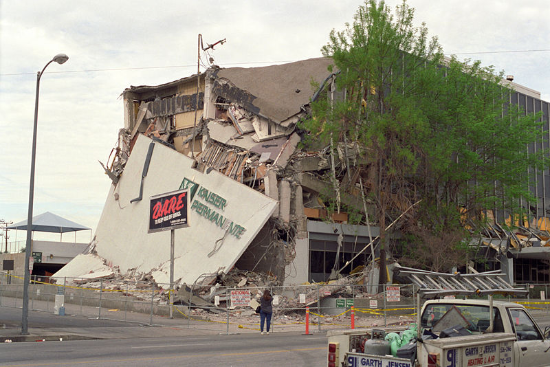

Has anyone ever experienced an earthquake?
No, but I did a report on earthquakes once.
No, but I did a report on earthquakes once.
Yeah, 'cos thats completely the same

No I haven't...
No, they never happen where I live. I know some people that were in one once, and they are very short, lasting from 4 seconds to 2 minutes. You're suppose to go to an open field so no buildings can fall on you.
Well, if you mean a really big earthquake, no. But I have been in a couple small ones. The house shook and all, but I guess everything was stable because the only thing that fell off any shelves (that I can remember) were a couple batteries.
Nothing large scale. Here in SoCal we tend to get a lto of tiny ones, but I haven't felt any in years however.
Yeah. Back when I lived in Washington State, we had a 6.8 earthquake. Kinda scary, really. You look around, see a lot of bewildered eyes. Especially the substitute teacher that day. 
I think I was the first person to notice it in the classroom.
I think I was the first person to notice it in the classroom.
Yup, the biggest one to hit the UK in 20 years. It was fun.
Apparently, I slept straight through one back home.
Nothing really devastating, but I've felt an earthquake with (I think) 5.6 magnitude a few months ago.
Felt a minor one and slept through another.
i live in texas... lot of tornadoes no earthquakes tho
I live in California. That's like asking if I've experienced wind.
No and I don't want to
Nope, never experienced one. But, did you know that if there was ever an earthquake that was an eleven on the Richter Scale, it would split the earth in half?
I've been in a simulation.
I live in California. That's like asking if I've experienced wind.
Same, though I haven't really felt many of them because I've only been here for about 4 years.
No and I don't want to
It's actually a pretty cool experience, as long as it's not too strong.
I've lived in California for almost my whole life, but I've only felt one earthquake before.
While on a cruise during my 07 vacation, supposively there was a earthquake about 50 or so miles away. My parents said they felt a slight shaking, but it was around 2 to 3 in the morning and I was asleep.
lots of them, but I'm never aware of them. They must have been small ones, plus, for some reason, I'm always asleep. The only one that I was aware of, felt like the people upstairs were jumping again so at first I took no notice. Actually, I think I'd be more afraid of tornadoes.
See my location.
There's millions of earthquakes that occur annually.
I've been in an earthquake. Pretty small one; pretty cool experience. ")
Recently actually, middle of the night, at first I thought the cat was clawing at the matress from under the bed.
I was watching stuff on YouTube using my iPod and was all 'WTF?'
I was watching stuff on YouTube using my iPod and was all 'WTF?'
I live in California. That's like asking if I've experienced wind.
Haha, yeah. We randomly have at least one every year or two, always lasting less than a second here. Very small, but kind of interesting.
been in 2 - once when i was too small to remember and another one a couple of years after that. involved a lot of people running out of out 10 floor building with their most needed belongings. happened in the caucuses - not an unusual even there.
Oh yeah, they're daily here in England.
...Nah, not me. Althought there was an 'earthquake' a few months ago, but I slept through it.
...Nah, not me. Althought there was an 'earthquake' a few months ago, but I slept through it.
California. We've got small earthquakes.
I've been in several, though they've all been extremely weak. We never get large earthquakes in my region.
I had /just/ moved to California when the 7.3 Landers earthquake hit. I remember thinking it was cool (Hey, I was 14, everything is cool then. Especially things that are life-threatening.)
No, basically the city I live in is a giant friggin bowl so we get floods most often...last one was in 1997 but I don't remember cause I was like 5 years old...it was bad though
There was one at 5:00AM this morning, happened about 120 miles away but it still hit us pretty hard, even though i almost slept through it and woke up. I only got about 2hrs of sleep. The aftershock was at school in 2nd period, although i was sleeping...
Hey, guess what! One just happened at 4:30AM a few days ago in Indiana (5.2 on Richter scale), which apparently is close enough to Wisconsin for people in Milwaukee to feel it slighty. I live 69 miles from there, so I was almost in the first one of my life. Almost.
Yup. This morning. Everything sort of rattled, and nothing exploded. Anticlimactic.
There was a 5.8 a couple of years ago in wellington, and a 7 with some 6.8 aftershocks further up the north island this year. Caused 30 Million dollars damage (kiwi million)
If there was an earthquake where I lived, I'd hear about that, but then everyone would start to worry about tidal waves from the beach. All I get down here are hurricanes.

Apparently, there was one in Toronto 3 days ago. Never noticed though.
Ahh! Did metanet shut down?
I've been to Taiwan before, and to ask anyone who lives there has ever felt an earthquake is like asking people who live near the Amazon River if they've ever had rain.
No, actually. (guessing the simulation at Questacon doesn't really count).
I would probibly get one every month. Wellington is DIRECTLY over a fault line and on the pacific ring of fire. I never knew that people hadn't experienced one before... kind of like never seeing the sea i thought..

Yes, 3. But they were small. There were no damages, and I didn't even notice 2 of them.
I felt another one recently, about a week or so before. This is because I live near to Sumatera, which has been hit by earthquakes recently.
Yes I have. 6.3 on Richter scale. Scared the hell out of me. I just got back from school last Thursday and I was eating and then BRROOOM, almost everything in the kitchen broke and all the books in the living room fell out of their shelves. I was still shaking two hours after it happened. Mostly because of the 1000 aftershocks that followed until this day.
Yes.
Shouldn't there be a poll with this?
Shouldn't there be a poll with this?